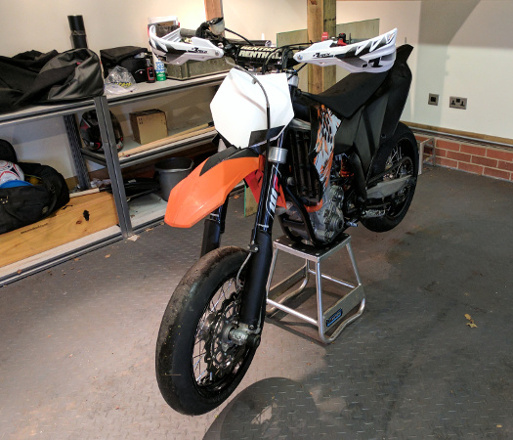
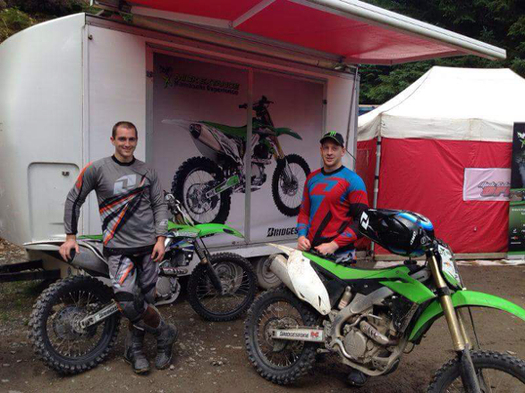
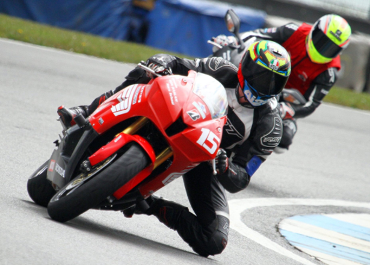

 

Hey!
My name is Joe Wigley, I am 26 years old and currently studying Web Design at the University of Northampton.
I am a huge petrol head with a massive obsession for cars and motorbikes, i drive a Nissan 350z and ride a KTM SMR 450, you can see them below.
When i get the opportunity i like to go drifting and hit the track on my bike, If you dont know what drifting is, check out the video.
I try and stay as fit as possible, until september hits and then its Christmas and i can eat what i want :), i have trained in mixed martial arts since the age of 18
and i am always trying to be active in the gym. My goal at the end of this course is to launch my own company so i can work for myself and live for me!